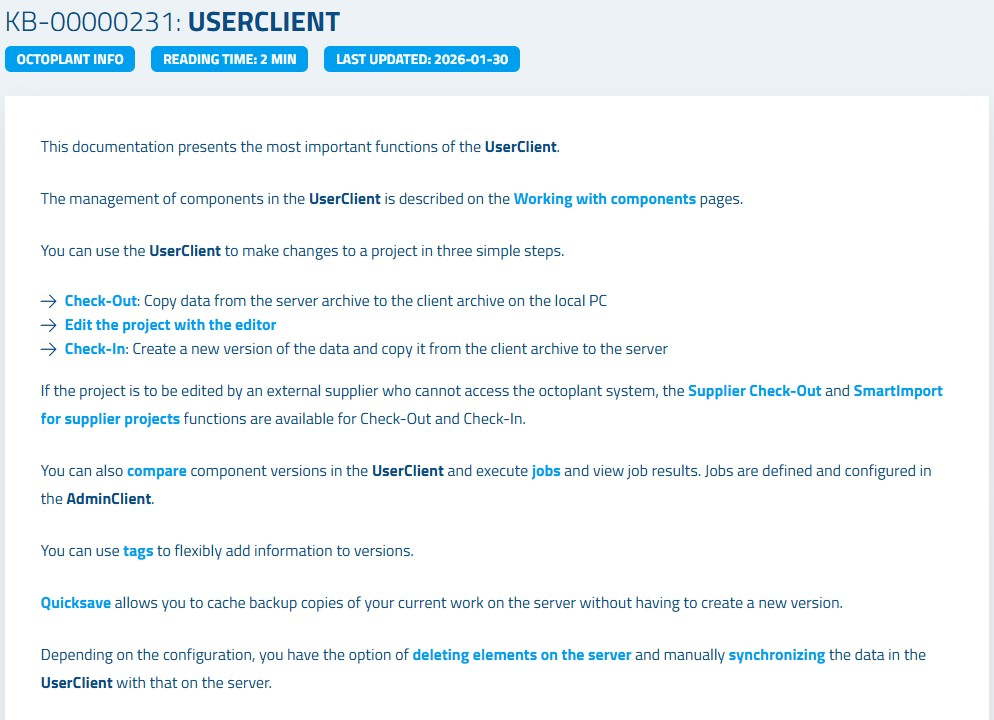

All user management tasks are performed in the Octoplant AdminClient, which requires administrator privileges.
1
Open the Octoplant AdminClient on your PC and log in with administrator credentials.
2
In the left navigation panel, click on User Management. The user management interface opens, showing existing users and groups.
It is best practice in Octoplant to assign rights to groups rather than individual users. This makes permission management much more efficient.
1
In the User Management module, click the New group button (or right-click in the groups panel and select New group).
2
Enter a descriptive name for the group (e.g., Development_Engineers, Operators_Line1).
3
Click OK to create the group.
💡
Best PracticeCreate groups that reflect your organizational structure or job roles. Assign rights to groups, then add users to groups. This way, when a user changes roles, you only need to change their group membership.
With the group created, you can now add individual users and assign them to the appropriate groups.
1
Click the New user button in the User Management module.
2
Enter the user's username, full name, and email address. The email address is required for job notification emails.
3
Set an initial password for the user. You can optionally check Force password change on next login to require the user to set their own password.
4
In the Groups section, assign the user to one or more groups by clicking Add to group and selecting the appropriate group(s).
5
If your organization uses Active Directory, you can enable Login via Windows credentials to allow the user to log in with their domain password.
6
Click Save to create the user account.
Rights in Octoplant are assigned at two levels: at the project tree level (which components a group can access) and at the feature level (which functions they can use).
1
Select the group you want to configure in the groups list.
2
In the Project tree rights section, navigate to the directory or component and assign the appropriate rights: Check-Out, Check-In, Create component, Delete, etc.
3
In the Module rights section, grant or restrict access to AdminClient modules and UserClient features as needed.
4
Click Save to apply the rights.
⚠️
SuperadministratorThe built-in Superadministrator account and the Administrators group cannot be deleted. Be careful when modifying their rights, as this could lock you out of the system.
Figure 4.1 – AdminClient User Management module overview

| Action | Where / How | Result |
|---|
| Open User Management | AdminClient → User Management | User and group list visible |
| Create Group | New group button → Enter name | Group created for role-based access |
| Create User | New user button → Fill details | User account created |
| Assign to Group | User properties → Add to group | User inherits group rights |
| Set Project Rights | Group → Project tree rights | Access to specific components defined |
| Set Module Rights | Group → Module rights | Feature access configured |